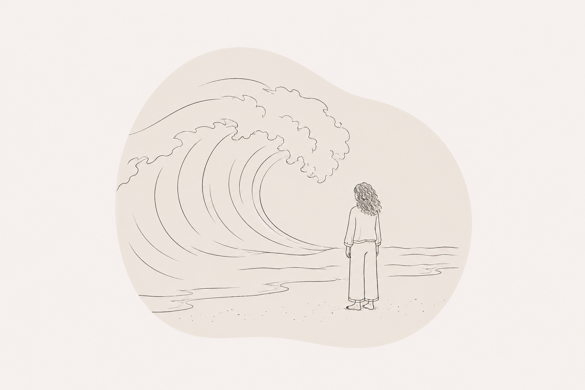
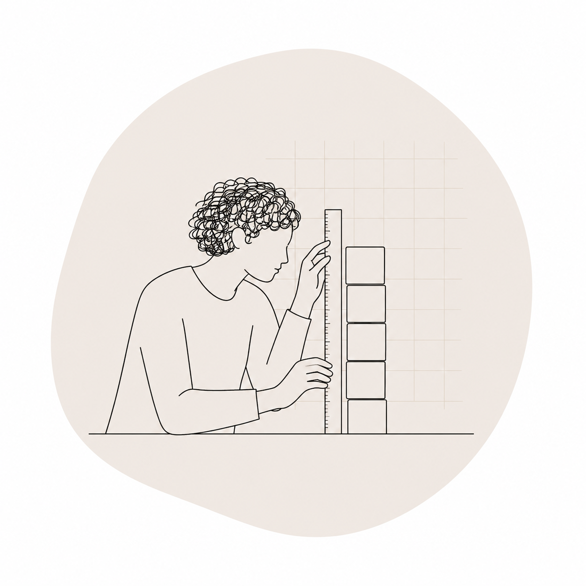
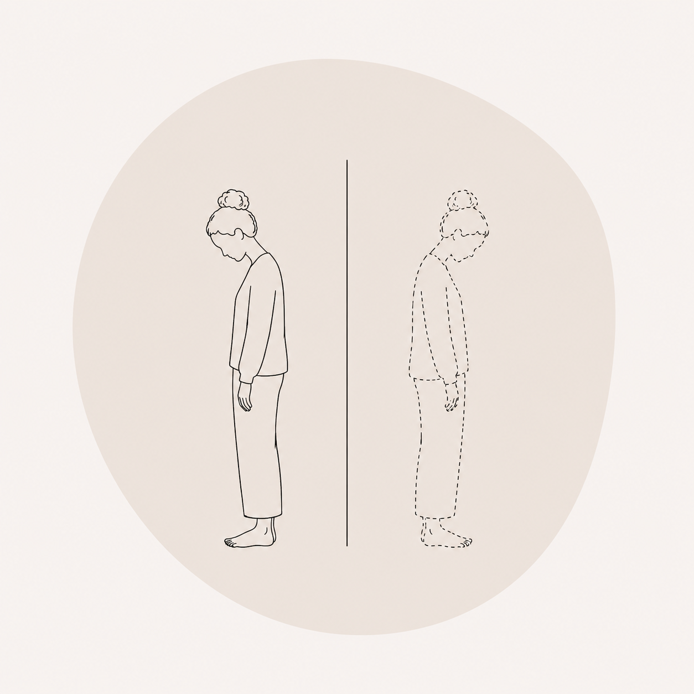

WHO I WORK WITH
Everyone's story is different.
You may recognise yourself in one of the experiences
below, or perhaps your situation doesn't fit neatly
into any of them.
Our work will always be shaped by your unique experience.

Grief
Learn more →
Anxiety
Learn more →
Burnout
Learn more →
Perfectionism
Learn more →
Chronic Stress
Learn more →
Life Transitions
Learn more →
People Pleasing
Learn more →
High Performers
Learn more →
Feeling Disconnected
Learn more →Not sure whether this work is right for you? You can always start with the free discovery call.
READ THE FAQ →